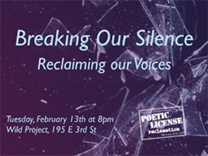
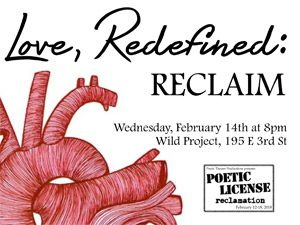
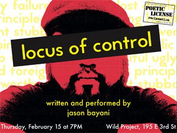
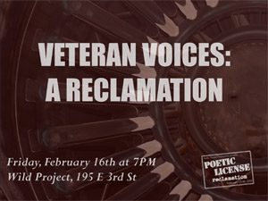
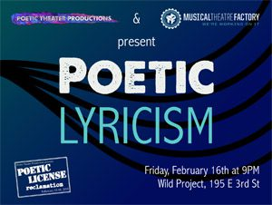
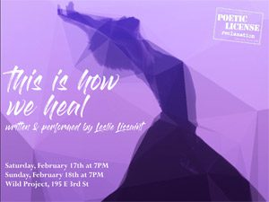
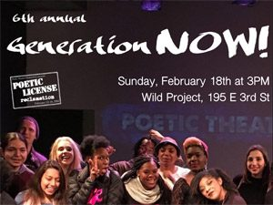

Poetic Theater Productions is proud to announce our 7th Annual Poetic License festival of new poetic theater to be presented February 12th -18th, 2018 at the Wild Project, 195 E 3rd St. The Poetic License 2018 theme is “Reclamation”. Poetic License: Reclamation is headlined with Leslie Lissaint’s This is How We Heal and Jason Bayani’s Locus of Control and features our artist oriented annual events Breaking Our Silence: Reclaiming Our Voices, Love Redefined: RECLAIM, Veteran Voices: A Reclamation, Poetic Lyricism, and Generation Now. This year’s festival will also feature art in the Wild Project lobby gallery by NYC city students, educators, activists and artists celebrating art and action connected to reclaiming rights and inspired by the 13 principles of the Black Lives Matter movement.
Monday, February 12th
The 2018 Poetic License Festival Opening Party
6PM: In the Lobby Gallery: the opening reception of Reclamation: A Celebration of Art and Action featuring art and poetry inspired by Black Lives Matter’s 13 Principles and created by NYC students, educators, activists and artists, and celebrates art and action connected with the reclamation of rights.
7PM: Opening Party Performances begin in the theater including performances from festival artists TBA and a concert by The Mighty Third Rail. The award-winning Mighty Third Rail is made up of poet Darian Dauchan (BROADWAY: Twentieth Century), violinist Curtis Stewart (National Repertory Orchestra), and bassist Ian Baggette (performer at the FIFA World Cup).
Tuesday, February 13th
8PM: Breaking Our Silence: Reclaiming Our Voices
Celebrating six years of Breaking Our Silence programming, the showcase was launched in the 2013 Poetic License Festival by Joanna Hoffman, Elliot D. Smith, Charan P. Morris and Storm Thomas and has since highlighted the work of 23 all-star queer poets and musicians, sharing their experiences of coming out, finding love, breaking the silence and speaking out. The 2018 showcase theme of “Reclaiming Our Voices” is a celebration of both the shared experiences and the complexities and uniqueness of each individual within the large LGBTQ community. Featured artists in the 2018 showcase will include Joanna Hoffman, Charan P. Morris, Sam LaRoche, Sarah Duncan, David Davila, Ian F. Stewart, and more artists TBA.
Wednesday, February 14th
8PM: Love, Redefined: RECLAIM
Poetic Theater Productions’ 8th annual celebration of non-commercial, non-traditional love featuring poetic and theatrical remixes, re-imaginings and riffs by more than ten incredible poets and playwrights responding to traditional sonnets, love poems, and social justice speeches of the past. Inspiration poems and newly developed pieces are presented side-by-side. This year’s theme of Love, Redefined: RECLAIM explores the use of art in the act of reclaiming our land, our bodies, our voices, our spirits, our love and our joy.
Thursday, February 15th
7PM: Locus Of Control
Written and Performed by Jason Bayani
Directed by Kat Evasco
Co-Presented with Eccentric Productions
Directed by award-winning performing artist, Kat Evasco, Locus of Control explores the lives of Filipino immigrants in Americ

a, taking you through Jason Bayani’s hip-hop inspired youth, club-going college days, and turbulent adulthood. Locus of Control navigates his experience dealing with race, mental health, addiction, and his status as the first American-born child in his family. Utilizing poetry, storytelling,
music, and multimedia, Bayani pieces together the different threads of his life while struggling to make sense of Walter Benjamin’s notion of redeeming the past in present time.
Jason Bayani is the author of Amulet (2013 Write Bloody Publishing). He’s an MFA graduate from Saint Mary’s College, a Kundiman fellow, and works as the Artistic Director for Kearny Street Workshop. Jason performs regularly around the country and recently debuted his solo theater show, “Locus of Control” in 2016. His second book, “Locus”, is forthcoming from Omnidawn Publishing in 2019. Jason Bayani speaks about the importance of exploring the Filipino American history:
Friday, February 16th
7PM: Veteran Voices: A Reclamation
Poetic Theater Productions veteran focused programming continues in this year’s festival with the showcase Veteran Voices: A Reclamation featuring poetry, readings, theater, and music by more than 14 veterans and family members creating art together and a post show discussion about the ways New York can further support existing and new veteran voice programming. The event will mark the merging of Poetic Theater Productions’ annual Kicking Down Doors program curated by Jenny Pacanowski and Everett Cox (launched in the 2016 Poetic License Festival) and the Veteran Voices program initiated this Fall (in collaboration with Consequence Magazine, Warrior Writers, War Literature & The Arts, and the Veteran Artist Program) presented with the 3-week run of J.A. Moad II’s production of Outside Paducah: The Wars At Home. Jenny Pacanowski, Everett Cox, J.A. Moad II and Jeremy Karafin curate. Full lineup TBA!
Friday, February 16th
9PM: Poetic Lyricism
Artists from Poetic Theater Productions and The Musical Theatre Factory communities team up to present an evening of new collaborative
poetic musical theatre featuring new work by artists from both organizations communities. The Musical Theatre Factory is revolutionizing the way new musicals are developed in New York City. With a focus on peer evaluation and collaborative feedback, their Assembly Line of development programs is designed to nurture new work from an initial idea to a first full draft, and even a first production.
Saturday, February 17th & Sunday, February 18th
7PM: This is How We Heal
Written and performed by Leslie Lissaint
Director: Katherine George
Dance Advisor: Hollie Wright
Vocalist: Sojourner Brown
Pianist: Ashley Dorce
Violinist: Sarah Cangussu
Leslie Lissaint’s autobiographical one-woman show set to live music and dance is a telling of her process to mend in light of fatherlessness, drug addiction, mass incarceration and the loneliness that silence births. The show embraces spoken word poetry, contemporary movement and live music as a vehicle for storytelling. This Is How We Heal demonstrates the power of the body to tell the truth in order to fully embody freedom.
Sunday, February 18th
3PM: Generation Now!
Poetic Theater Productions’ 6th annual youth poetic theater showcase features artists from New York, Urban Word NYC, Girl Be Heard, viBe Theater Experience, EarSay Youth Voices, and more.
viBe Theater Experience: Working to empower underserved teenage girls to write and perform original theater, video and music about the real-life issues they face daily. We provide a safe, creative space for under-served girls to express their voices, take on challenges and gain the self-confidence necessary to succeed personally, artistically and academically. viBe empowers girls through intensive, free programs, which engage and inspire them to write, create, publish, direct and perform personal and truthful collaborative theater and music.
Urban Word NYC: Championing the voices of New York City youth by providing platforms for critical literacy, youth development and leadership through free and uncensored writing, college prep and performance opportunities.
Girl Be Heard: A nonprofit theatre company that brings global issues affecting girls center stage by empowering young women to tell their stories. If a girl can change her own life, she can change the lives of girls everywhere. We envision a world in which every girl is valued and encouraged to be a leader and change maker.
EarSay Youth Voices: Transforming Trauma Into Art is an EarSay initiative, created and directed by Judith Sloan, born out of our partnership with the International High School at LaGuardia Community College where many teenagers have emigrated to the U.S. from war-zones and conflict-zones. The premise of this workshop is based on healing through artistic expression using a combination of music, movement, theatre and storytelling. This process helps release the stories and stressors that prevent people who have been traumatized by war, economic or natural disasters from moving forward. This program brings an understanding of confronting obstacles through artistic expression to communities that are poor, displaced, or don’t have access to artistic training, serving approximately 450 students. The project grows out of our commitment to creating artistic works that evolve out of individual experience and community. In this case, the community is immigrant and refugee teenagers attending school in New York City. At a time of war, global tension, and polarization, our program encourages a depth of scholarship and storytelling that shapes the experience of the participants, giving them tools to make connections between cultures, shed light on the complexity and humanity of each individual, and deepen what it means or could mean to be part of a global community.